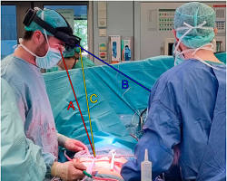
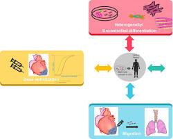

Breakthroughs in Cardiac Surgery
December 27, 2024

Cardiac surgery has witnessed remarkable breakthroughs in recent years, revolutionizing the treatment of heart conditions and improving patient outcomes. Some of the key advancements include:
Minimally Invasive Techniques
Surgeons can now perform complex procedures through small incisions, leading to faster recovery times and reduced scarring. Techniques like robotic-assisted surgery and transcatheter procedures allow for greater precision and less invasiveness.
Artificial Heart Technology
Advancements in artificial heart technology, including ventricular assist devices (VADs) and total artificial hearts, offer hope for patients with severe heart failure. These devices can provide temporary or permanent support, improving quality of life and increasing survival rates.
Regenerative Medicine
Research in regenerative medicine is exploring innovative ways to repair damaged heart tissue. Stem cell therapy and gene therapy show promise in regenerating heart muscle and improving cardiac function.

Improved Surgical Tools and Techniques
The development of advanced surgical tools and techniques, such as 3D imaging and navigation systems, enables surgeons to perform complex procedures with greater precision and accuracy.

These breakthroughs in cardiac surgery have not only improved patient outcomes but also expanded the range of treatable heart conditions. As research and technology continue to advance, we can expect even more exciting developments in the field of cardiac surgery in the years to come.